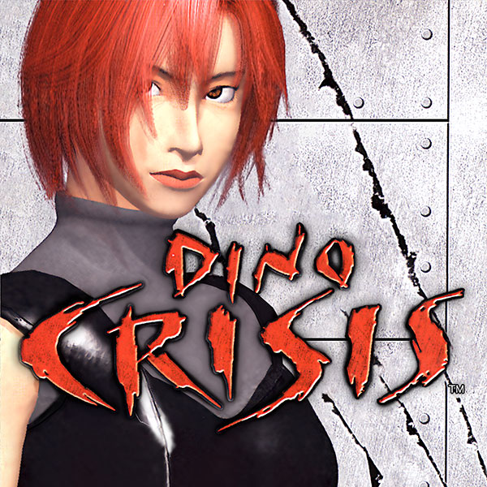
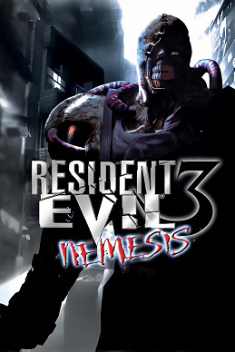
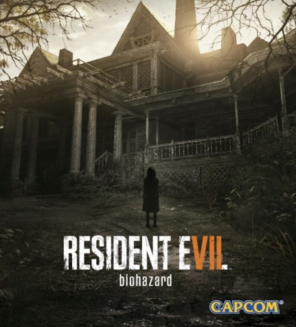
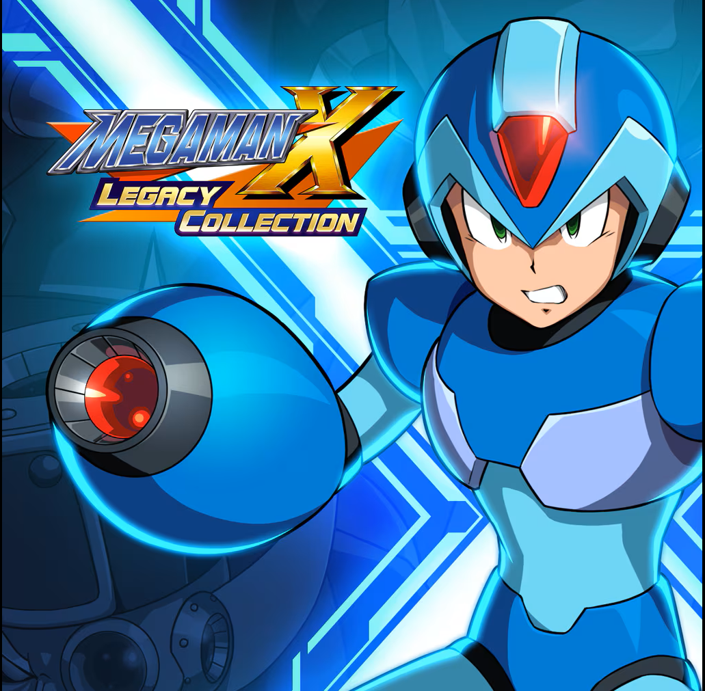
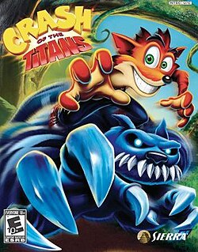
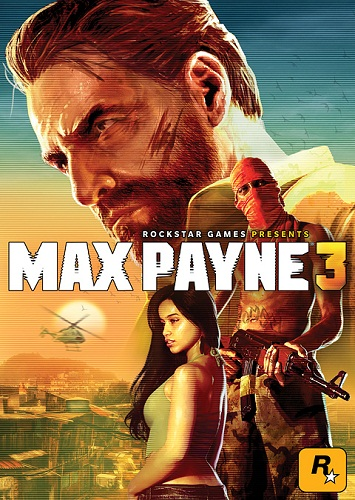

jogos zerados 2025
Assassins Creed 4 Black Flag
Zerei no dia 18 de Janeiro, levei em torno de 20 horas de gameplay, tambem joguei sua DLC, maior qualidade desse jogo é o desenvolvimento do personagem principal: Edward Kenway, junto com a sua jogabilidade prazerosa, a possibilidade de utilizar 4 pistolas te dá a sensação que você é imbativel. O maior defeito do jogo é sem dúvida sua dublagem que as vezes é boa, mas na maior parte do tempo, é bem inferior ao seu antecessor (AC 3) e o seu sucessor (AC Rogue), além de te limitar a carregar apenas espadas de 2 mãos, ainda dá pra usar outras armas pegas do chão, mas você perde elas assim que esbarra em alguem ou escala alguma parede.

nota do jogo: 10
Plataformas disponíveis:
Xbox 360, Xbox One, Xbox Series S/X, PS3, PS4, PS5, Nintendo WII U, PC
Quantum Break
Zerei no dia 27 de Janeiro, levei 8 horas de gameplay, sua maior qualidade são os poderes que o protagonista, Jack Joice, possue, tornando a gameplay muito variada e divertida, o ponto mais baixo desse jogo é a sua duração de apenas 8 horas, pois, por mais que esse jogo tenha uma gameplay divertida, metade desse tempo você vai passar assistindo cutscenes ou interagindo com o cenario e personagens, fora que para entender a historia inteira, você precisa assistir uma serie que é intregrada ao jogo, cada capitulo que você completa, libera um episodio de 40 minutos da serie, quebrando completamente o ritmo do jogo.

nota do jogo: 7,5
Plataformas disponíveis:
Xbox One, Xbox Series S/X, PC
Ninja Gaiden Black
Zerei no dia 08 de Fevereiro com 15 horas de gameplay, sua maior qualidade é o combate extremamente variado e complexo, podendo utilizar varias armas e magias diferentes, seu maior defeito é a dificuldade artificial, o jogo coloca partes extremamente dificieis desnecessárias, frustrando bastante quem joga, na parte final do jogo, ele não te dá nenhum local para comprar itens de cura e nem avisa que isso não será mais possivel, se você não tiver feito dois saves, provavelmente ficará preso nessa parte ou vai demorar muito mais tempo para passar.

nota do jogo: 8
Plataformas disponíveis:
Xbox, Xbox 360, Xbox One, Xbox Series S/X
Mafia 3
Zerei no dia 14 de Fevereiro com 25 horas de gameplay, sua maior qualidade é sua gameplay de tiro que é bem satisfatoria e suas finalizações brutais que são bem variadas e legais de assistir, seu maior defeito é ser extremamente repetitivo, daria pra cortar metade do jogo fora sem problema nenhum, os três parceiros do Lincon (com exceção do Vito) são muito qualquer coisa, você até esquece da existência deles, tambem não ajuda o fato das missões secundarias de cada um serem mais repetitivas que as missões principais

nota do jogo: 6,5
Plataformas disponíveis:
PS4, PS5, Xbox One, Xbox Series S/X, PC
A Way Out
Zerei no dia 03 de Março junto com o Luan, levamos 8 horas para zerar e platinar, sua maior qualidade é são os momentos que os jogadores tem que se ajudar, seja subindo uma parede juntos, ou até fugindo da prisão, o jogo tambem consegue fazer com que a gente se importe com os 2 personagens, tornando o final do jogo de explodir cabeças, seu maior defeito é sua gameplay de tiro que acontece nos momentos finais do jogo, parece que os inimigos são feitos de papel.

nota do jogo: 9
Plataformas disponíveis:
Xbox one, Xbox Series S/X, PS4, PS5, PC
Alien Isolation
Zerei no dia 08 de Março com 20 horas de gameplay, a maior qualidade desse jogo é a inteligência artificial do Alien, ela te persegue e te aterroriza durante todo o jogo, o alien consegue te deixar tenso até quando não está em cena, o seu maior defeito é ser longo e o gerenciamento de itens, você não tem como expandir o espaço de sua mochila ou modificar suas armas, a única coisa que dá pra fazer é encontrar projetos de arremessáveis melhores, tipo uma bomba de fumaça que dura mais tempo ativa, etc.

nota do jogo: 8,5
Plataformas disponíveis:
Xbox 360, Xbox one, Xbox Series S/X, PS3, PS4, PS5, Nintendo Switch, PC
Alan Wake 2
Zerei no dia 24 de Março, levei em torno de 30 horas de gameplay, sua maior qualidade é o enredo que te prende do início ao fim, somado com os gráficos impecáveis e a trilha sonora de alta qualidade, o fato de o jogo possibilitar jogar a campanha dos dois personagens na ordem que você quiser é muito bom, não deixando a gameplay ficar repetitiva, aliás, a gameplay entre as duas campanhas varia bastante, com o Alan você vê algo mais de terror psicológico e algumas maluquice, com a Saga é algo mais investigativo e "pé no chão".

nota do jogo: 10
Plataformas disponíveis:
Xbox Series S/X, PS5, PC
Grounded
Platinei no dia 12 de Abril junto com o Luan, temos mais de 100 horas de gameplay juntando todos os saves, sua maior qualidade é a progressão muito bem feita juntamente com o jardim, que é o local do qual o jogo se passa, que contem vários segredos, chefões secretos, armas desbloqueáveis, etc. Esse jogo é extremamente divertido quando jogado com outras pessoas, pórem, sozinho talvez você passe por algum perrengue, por mais que os inimigos fiquem com menos vida quando você joga sozinho, com duas ou mais pessoas é bem mais fácil carregar itens, batalhar contra os insetos, construir sua base.

nota do jogo: 10
Plataformas disponíveis:
Xbox One, Xbox Series S/X, PS4, PS5, Nintendo Switch, PC
Tormented Souls
Zerei no dia 08 de Abril com 9 horas de gameplay, sua maior qualidade é a atmosfera criada juntamente com os puzzles extremamente criativos, que são dos mais diversos tipos, desde ver uma senha em um papel, até entrar em outra realidade para que certa ação seja realizada, seu ponto mais baixo é o combate, o jogo tem apenas 4 tipos de inimigos que vão ser repetidos até o fim do jogo.

nota do jogo: 9
Plataformas disponíveis:
Xbox One, Xbox Series S/X, PS4, PS5, Nintendo Switch, PC
Urban Chaos
Zerei no dia 11 de Abril com 6 horas de gameplay, sua maior qualidade é a variação de inimigos e as formas de combate-los, podendo utilizar várias armas de fogo e corpo, maior defeito é a sua performance na versão de PS2 (versão que eu joguei).

nota do jogo: 8
Plataformas disponíveis:
Xbox, PS2
Ninja Gaiden Black 2
Zerei no dia 29 de Abril com 11 horas de gameplay, sua maior qualidade é a dificuldade que foi melhor executada que no primeiro jogo e seu combate que ficou mais dinâmico e divertido, agora os inimigos perdem os membros com os seus golpes e você pode finalizá-los com o golpe forte de qualquer arma, facilitando muito quando existem muitos inimigos na tela, seu maior defeito é sua parte final que é MUUUIIIITOOO corrida e mal feita.

nota do jogo: 7
Plataformas disponíveis:
Xbox Series S/X, PS5, PC
Clair Obscure Expedition 33
Platinei no dia 21 de Maio com 44 horas de gameplay, suas maiores qualidades são seu enredo, que te prende do início ao fim, seu combate, que mesmo sendo de turno é interessante, a direção de arte é magnifica, é incrível o que os DEVs conseguiram fazer com pouco recurso, e por último a trilha sonora presente durante todo o jogo, a trilha sonora desse jogo contém mais de 150 músicas, uma melhor que a outra, uma coisa muito boa que esse jogo tem que não é muito comum dos jogos do mesmo genero, é que os encontros com os inimigos não são aleatórios, com você podendo avista-los e até mesmo ataca-los antes da luta de verdade começar.

nota do jogo: 10
Plataformas disponíveis:
Xbox Series S/X, PS5, PC
Dredge
Zerei no dia 27 de Maio com 11 hoas de gameplay, sua maior qualidade é sua gameplay relaxante e seu plot twist no final do jogo, seu maior defeito é ser limitado na gameplay, se resumindo apenas ao barquinho, não tendo outros tipos de barcos para utilizar, outra coisa zoada é que para pescar todo tipo de peixe você só tem duas maneiras de fazer: chegando perto da area de pesca e apretando A, ou colocando um covo e esperando o tempo passar, seria interessante se tivesse uma mecânica de pescar peixes maiores utilizando um arpão ou algo do tipo.

nota do jogo: 8
Plataformas disponíveis:
Xbox One, Xbox Series S/X, PS4, PS5, Nintendo Switch, Android, PC
GTA Vice City: The Definitive Edition
Platinei no dia 10 de Junho com 44 horas de gameplay, as qualidades desse jogo são as mais diversas possíveis, mapa bem feito e marcante, protagonista memorável e personagens secundários interessantes, muitos veículos novos em comparação com seu antecessor (GTA 3), a inclusão da iluminação clássica fez total diferença na vibe dos anos 80 que o jogo se passa, poder comprar e gerenciar propriedades é o grande trunfo desse jogo, você pode escolher a ordem das missões depois de um certo ponto, desde que você tenha o dinheiro necessário para comprar a propriedade daquela missão, algo que eu sinto falta nesse jogo é o mapa marcar as propriedades que são compráveis (elas ficam marcadas depois que você compra, mas antes não), pois elas são essenciais para finalizar o jogo.

nota do jogo: 10
Plataformas disponíveis:
Xbox One, Xbox Series S/X, PS4, PS5, Nintendo Switch, PC
Dino Crisis
Zerei no dia 11 de Junho com 10 horas de gameplay, esse é um ótimo survival horror de sua época, bebe muito da fonte de resident evil 1, mas faz muitas coisas diferentes, como colocar dinossauros como os nossos pricipais inimigos do início ao fim do jogo, e por uma questão de limitação, esses dinossauros são muito fortes e requer muitos tiros para morrer, isso se deve porque o PS1 não aguentava renderizar o cenário mais muitos inimigos na tela ao mesmo tempo, isso leva a outra coisa que esse jogo se difencia de resident evil: os cenários são todos em 3D, este jogo contém muitos quebra-cabeças no caminho, bem mais do que qualquer RE, e eles são dos mais diversos e interessantes de se resolver, o jogo tem 3 finais, cada final depende de escolhas que você pode fazer no decorrer da jogatina, agora vamos para as coisas ruins: o jogo não guarda as notas que você leu, então se você esquecer de alguma informação (e você vai esquecer) tem que voltar até sala que tem o arquivo para ler ele novamente, agora a mixagem de itens é uma bagunça, você tem um monte de itens para fazer misturas, mas o sistema não é nada fácil de aprender e entender, você pode fazer dardos tranquilizantes usando remedio e usar bala pra fazer curativo???, pelos menos o gerenciamento de inventário nesse jogo é menos punitivo, te deixando levar todos os itens chave sem ocupar um espaço de uma munição, cura, etc. Merece um remake.
nota do jogo: 8
Plataformas disponíveis:
PS1
Resident Evil 3: Nemesis
Zerei no dia 17 de Junho com 8 horas de gameplay, esse resident evil me impressionou bastante pela quantidade de conteudo que ele oferece, você pode fazer diversas escolhas no decorrer do jogo, escolhas essa que podem determinar o que você pode, ou não, pegar durante a campanha, ou o caminho que você vai seguir, outra adição interessante é a possibilidade de fazer munição pra praticamente qualquer arma no jogo utilizando apenas 2 tipos de polvora, para fazer as munições você tambem precisa de um item para misturar as polvoras, esse item é desbloqueado desde o início da sua jogatina, combinando o item com a polvora você cria a munição desejada, por exemplo: polvora do tipo A cria bala de pistola, tipo B bala calibre 12, as duas polvoras juntas fazem a polvora C, usada pra criar munição para o lança granadas, um sistema super intuitivo e fácil. Uma coisa que é quase que secreta nesse jogo envolvendo o sistema de criar munição, é que a Jill faz mais munição com o tempo, tipo, se você criar bala de pistola 1 vez, 30 balas vão ser feitas, 3 vezes, 35 balas, 5 vezes, 40 balas, sendo que depois de um tempo, você começa a criar munição especial para aquela arma em específico. Tambem vale a pena destacar o Nemesis aqui, ele te persegue durante o jogo inteiro, sendo imbátivel na maior parte do tempo, forçando o jogador a fugir e escolher bem se vale a pena usar balas só para afastá-lo. o arsenal nesse jogo é bem amplo, indo desde pistolas, shotguns, lançador de minas, lança granadas, revolver, entre outros.
nota do jogo: 10
Plataformas disponíveis:
PS1, DreamCast, GameCube, PS4 e PS5 (somente com a assinatura da playstation plus deluxe)
Resident Evil 5
Zerei no dia 20 de Junho com 10 horas de gameplay, pela primeira vez eu joguei esse resident coop do início ao fim, a experiência melhora muito, pois cada jogador pode comprar e melhorar suas próprias armas, e o dinheiro do jogo é compartilhado quando você coleta, mas quando gasta, cada um tem o seu, e isso é muito bom. Porém, jogar sozinho nesse jogo é um problema, pois a inteligência artificial do seu companheiro é muito ruim, fazendo coisas simples se tornarem verdadeiros desafios, outra coisa zoada nesse jogo é seu inventário, no resident 4 o Leon carregava os itens dentro de sua maleta, que era acessada ao pausar o jogo, ela carregava todo tipo de item: granadas, ervas, munição, armas, etc. No resident 5, você só tem 9 quadrados de espaço, não podendo fazer nenhuma melhoria nele, o jogo te dá armas novas constantemente, mas você não consegue usar todas elas, pois não tem espaço, além dos itens de cura e munição também ocuparem espaço, fazendo o jogador nunca ter cura para usar.

nota do jogo: 8
Plataformas disponíveis:
Xbox 360, Xbox one, Xbox Series S/X, PS3, PS4, PS5, Nintendo Switch, PC
Resident Evil 7
Zerei no dia 27 de Junho com 8 horas de gameplay, O primeiro resident evil em primeira pessoa que eu joguei, e devo dizer, que jogo bom, não deve em nada aos outros da saga, tem um level design excelente, a ambientação e os efeitos sonoros são muito imersivos, a familia Baker tem muita presença e carisma, pricipalmente o Jake Baker, simplesmente uns dos melhores jogos de terror já lançados e também um dos melhores da saga como um todo, as coisas que eu não gostei foram: a baixa variedade de inimigos, existem apenas 4 tipos de inimigo, sendo que 1 deles aparece apenas na casa de hospedes e o outro é basicamente um chefe, também não gostei da parte do navio, o jogo te obriga a assistir uma fita, que acaba deixando o ritmo de gameplay bem mais lento, gostei de algumas DLCs, porém, outras deixaram muito a desejar, pelo menos a gameplay nelas é bem diferente em comparação ao jogo base.
nota do jogo: 10
Plataformas disponíveis:
Xbox One, Xbox Series S/X, PS4, PS5, PC, Nintendo Switch
Mega Man X Colletion 1
Estou jogando na ordem de lançamento, essa coletânea contém o Mega Man X1, X2, X3 e X4, esses jogos são bem curtos e podem ser zerados em menos de 2 horas, Mega Man X1: um ótimo jogo e um refresco pra franquia, que vinha caindo em repetição há algum tempo, fases legais de jogar, os poderes dos chefes são muito úteis e apelões, as partes de armadura tambem acrescentam um valor de gameplay muito bom, principalmente a botinha com o dash, a trilha sonora tambem é muito boa e memoravel, no geral esse jogo é 10/10, unica coisa que pode incomodar um pouco são os slowdowns que acontecem quando tem muita coisa na tela, mas as sequências arrumaram isso. Mega Man X2: uma ótima evolução do que veio no X1, os chefes são mais interessantes mecanicamente, as armas de chefe tambem tem sua utilidade para pegar upgrades, o design das fases ficou um pouco mais dificil, mas esse jogo tem muita coisa que te deixa forte, então acho justo, o dash no ar muda completamente o modo de jogar, você poder usar o buster carregado com dois tiros também é muito bom, minha maior critica é o fato do jogo colocar inimigos que precisam ser derrotados em fases especificas, e se você não o fazer no tempo certo, eles somem e você pega o final ruim, eles deveriam ser fixos nas fases, porque tira um pouco do fator de escolha de fase que tinha no X1, mas de resto, esse jogo tambem é 10/10. Mega Man X3: esse é o primeiro jogo da franquia que você consegue jogar com o Zero, porém isso é tão limitado que seria melhor se não existisse, o Zero é extremamente forte desde o início do jogo, porém, você não pode pegar melhorias e nem enfrentar chefes com ele, e se você morrer, ele fica indisponível pelo resto do jogo. Esse também é o Mega Man mais difícil até agora, mas é difícil pelos motivos errados, esse jogo é cheio de buracos e espinhos que te matam com 1 hit, além de não oferecer muitas vidas e nem formas de repor energia facilmente. O chefe final desse jogo é uma das coisas mais injustas que eu ja vi, a hitbox dele é extremamente apertada e ele causa um dano absurdo, de resto, esse é um clássico Mega Man: pula, atira, usa o dash, troca pra arma do chefe, etc. Colocaram uma mecânica de usar o dash pra cima que ajuda bastante, além de que a gold armor permitir usar dois dash seguidos, minha nota pra esse jogo é 6/10.
nota do jogo: 9
Plataformas disponíveis:
Xbox One, Xbox Series S/X, PS4, PS5, PC, Nintendo Switch
Crash Of The Titans
Zerei no dia 26 de Julho com 7 horas de gameplay, esse crash é um dos mais diferentes de toda a franquia, o foco dele é no combate, existem varios monstros que podem ser nocauteados e usados em combate pelo próprio crash, praticamente toda fase tem um monstro novo, dando muita variedade no combate, as fases desse jogo são muito divertidas e variadas, você passa por uma ilha de dia, um local de construção, um vulcão, uma praia a noite, uma instalação gigante cheia de salas, etc. Seu maior defeito são os monstros serem usados apenas para o combate, tendo 0 utilidade fora dele.
nota do jogo: 9
Plataformas disponíveis:
PS2, Xbox 360, Nintendo WII, PSP
Sekiro
zerei dia 18 de Agosto de 2025 com 20 horas de gameplay, esse é o melhor souls like da from software que eu joguei, desafios bem feitos, chefes memoráveis, combate maravilhoso, exploração recompensadora e o melhor chefe final de um souls like, único ponto fraco e só ter uma arma do inicio ao fim.

nota do jogo: 10
Plataformas disponíveis:
PS4, PS5, Xbox One, Xbox Series S/X, PC
Max Payne 3
Zerei em agosto de 2025 pela 5° vez, esse é um dos meus jogos favoritos de todos os tempos, combate perfeito, historia interessante, ambientação super bem feita com o jogo de passando no Brasil, o único defeito é não poder pular as cutscenes.
nota do jogo: 10
Plataformas disponíveis:
PS3, Xbox 360, Xbox One, Xbox Series S/X, PC
Metal Gear Solid Delta
Zerei em Setembro de 2025, esse remake é tudo o que eu sonhei para metal gear solid 3, poder andar agachado, aviso da onde o inimigo te viu, bussola que te guia para o objetivo, legendas em português e gráficos insanos de bom, o único defeito é a performance no seu lançamento.

nota do jogo: 9,5
Plataformas disponíveis:
PS5, Xbox Series S/X, PC
Halo: Combat Evolved
Zerei em Setembro de 2025, esse é o 2° jogo da franquia Halo que eu zero, mas ele me impressionou bastante, IA muito boa: os inimigos bolam estrategias para te atacarem, recuam quando estão sem vida, atacam em grupos, etc. o Gráfico é bem decente para um jogo de 2001 e ainda tem a possibilidade de jogar a campanha inteira em coop, fora as músicas muito boas que tocam durantes as fases, o maior erro desse jogo são os designs das fases, que parecem todas iguais, e tambem a fase da biblioteca que é um porre.

nota do jogo: 8,5
Plataformas disponíveis:
Xbox Classico, Xbox 360, Xbox One, Xbox Series S/X, PC
Gears Of War: Reloaded
Zerei em Setembro de 2025 com apenas 6 horas e meia de jogo, a jogatina foi feita em coop com o Luan, foi a primeira vez que joguei essse gears, já tinha jogado o Jugdment um tempo atrás, e me diverti bastante, a dublagem é muito boa, o jogo tá bem bonito nesse remake, o Marcus é um protagonista muito da hora e a carnifiçina que dá pra fazer nos locusts está insana, mas a IA desse jogo é terrível, tanto a inimiga quanto a aliada, é o completo oposto do que falei no Halo, todo mundo é burro feito porta, fora que o jogo é meio bugado (pesquisei e vi que na versão original também era assim), fizeram um remake e não arrumaram o básico.

nota do jogo: 7,5
Plataformas disponíveis:
Xbox 360, Xbox One, Xbox Series S/X, PS5, PC
Silent Hill F
Zerei em Outubro de 2025 com um pouco mais de 17 horas de jogo, esse foi o meu primeiro Silent Hill que zerei (eu era muito cagão antigamente), mas praticamente tudo aqui me agradou, ambientação do Japão nos anos 60 ficou perfeita, o jogo tem uma ótima atuação de voz (em Japones pelo menos), ele é ridiculamente bonito, tem uma narrativa, que, quando unido com o misterio, te prende do inicio ao fim. Agora o que eu não gostei, na verdade, eu odiei, foi o combate do jogo, você luta usando apenas armas brancas, facas, foices, tacos de beisebol, canos, etc, a Hinako, protagonista do jogo, tem uma barra de estamina que não dura nada, em apenas 3 golpes ela já se cansa e fica extremamente vulnerável, o jogo possui uma esquiva, mas ela não pode ser feita até que a barra de vigor encha até certo ponto, fora que não é possível cancelar as animações de ataque, então se você atacar ao mesmo tempo que o inimigo, já era, vai apanhar e não vai pdoer fazer nada.

nota do jogo: 7
Plataformas disponíveis:
Xbox Series S/X, PS5, PC
Devil May Cry 1
Zerei em Novembro de 2025 com 5 horas de gameplay, esse aqui é o pai dos Hack N'Slash, DMC surgiu com uma gameplay tão única que praticamente sozinho criou um genero inteiro de jogos, eu gostei bastante de combar nesse jogo, os golpes tem muito impacto e o bestiario é bem variado, a maneira de avançar nas fases e bem parecido com resident evil, você pega uma chave que abre uma porta, atras da porta tem um chefe, você derrota o chefe e a fase acaba, o jogo inteiro é basicamente isso, no meio desse vai e vem por aí, tambem existem algumas partes de plataforma, que são horriveis, o pulo desse jogo foi feito pensado para o combate, então toda sessão de plataforma nesse jogo, você vai precisar de muita paciencia e precisão, outra coisa paia nesse jogo é sua camera, ela as vezes mão mostra os inimigos na tela, e eles até conseguem te atacar fora dela, é um erro que foi corrigido lá no DMC 4.

nota do jogo: 8
Plataformas disponíveis:
Xbox 360, Xbox One, Xbox Series S/X, PS2, PS3, PS4, PS5, Nintendo Switch, PC
Castlevania 1
Zerei em Dezembro de 2025, esse jogo é bem curtinho, tendo apenas 1 hora de duração se você souber o que tem que fazer, Castlevania 1 é muito a frente de seu tempo, um jogo de 1986 que é extremamente jogável nos dias de hoje, tem uma pixel arte bem bonita, uma trilha sonora absurda pro Nintendinho, e uma variação de inimigos e chefes bem alta até, só não é um 10, porque a fase final desse jogo é uma dor de cabeça, você morre com apenas 4 hits, e perde todos os seus upgrades no processo, ou seja, é melhor reiniciar a fase inteira.

nota do jogo: 9
Plataformas disponíveis:
Nintendinho, Xbox One, Xbox Series S/X, PS4, PS5, Nintendo Switch, PC
Silent Hill 2 Remake

nota do jogo: 10
Plataformas disponíveis:
PS5, Xbox Series S/X, PC